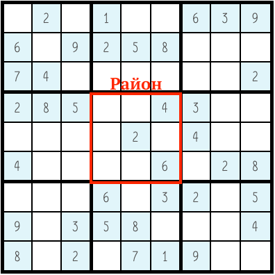
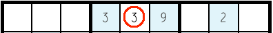
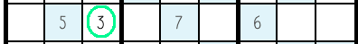
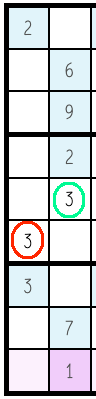
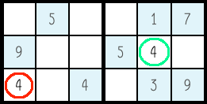
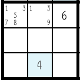

|
{{e }} |
Поздравляем! Вы верно решили судоку {{size*size}} x {{size*size}} уровня "{{getLvlName()}}" за {{this.timer}}.
Вы уверены, что хотите узнать решение? Если нет, нажмите вне этого окна
Судоку решён неверно, продолжайте играть!
|
{{e }} |
Поздравляем! Вы верно решили судоку {{size*size}} x {{size*size}} уровня "{{getLvlName()}}" за {{this.timer}}.
Вы уверены, что хотите узнать решение? Если нет, нажмите вне этого окна
Судоку решён неверно, продолжайте играть!
В судоку играют на квадратном поле 9 на 9 клеток. В начале игры на поле известно некоторое количество цифр в определенных клетках. Само поле поделено на районы (квадраты 3 на 3)
Цель судоку: заполнить все пустые клетки с помощью цифр 1-9 (по одной цифре на клетку) по следующим правилам:
1) Цифра может появиться лишь один раз в каждой строке
✕ Неверно
✔ Верно
2) Цифра может появиться лишь один раз в каждом столбце
✕ Неверно : ✔ Верно
3) Цифра может появиться лишь один раз в каждом районе
✕ Неверно : ✔ Верно
Если вы не уверены, какая цифра может находиться в клетке, можно оставить подсказки, выбрав несколько цифр, которые могут стоять на этом месте, а потом выбрать из них одну.
Вот и всё. Совет: сначала заполняйте цифры, в которых уверены на 100%, а потом приступайте к оставшимся клеткам.
Также в игре есть уникальная версия - 4 на 4, в которой действуют те же самые правила.
Теперь пора играть!
Если у вас есть какие-либо вопросы или предложения, пишите сюда: https://vk.com/jtaugner